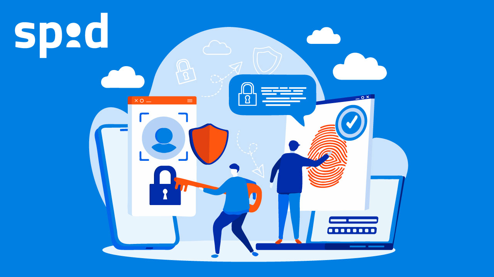

I servizi digitali pubblici sono piattaforme messe a disposizione dallo Stato o dagli enti locali per facilitare la vita dei cittadini. Tra questi troviamo siti e app che permettono di accedere a informazioni, servizi amministrativi e comunicazioni ufficiali. L’utilizzo di questi strumenti è spesso regolamentato da norme precise, garantendo sicurezza e trasparenza.
Questi servizi consentono ai cittadini di svolgere operazioni online senza recarsi fisicamente negli uffici, risparmiando tempo e aumentando l’efficienza. Alcuni esempi importanti includono SPID per l’identità digitale, il sito INPS per pratiche pensionistiche o contributive, l’app IO per comunicazioni con il Comune, e molti altri. 
- Accesso alle informazioni: i cittadini possono consultare documenti ufficiali, pagamenti, scadenze e normative in modo semplice e sicuro.
- Servizi online: prenotazioni, richieste e pratiche digitali che riducono code e tempi di attesa negli uffici pubblici.
- Identità digitale: strumenti come SPID permettono di autenticarsi in modo sicuro e proteggere i propri dati personali.
- Comunicazioni ufficiali: app come IO informano i cittadini su notifiche, scadenze e avvisi pubblici direttamente sullo smartphone.
L’uso consapevole dei servizi pubblici digitali aiuta a migliorare la partecipazione civica, aumentare la trasparenza e ridurre i rischi legati alla sicurezza dei dati. Conoscere le funzionalità e le modalità di accesso è fondamentale per utilizzare queste piattaforme in modo efficace e sicuro.
Conclusione
In sintesi, i servizi pubblici digitali permettono di accedere facilmente a informazioni e servizi, favorendo la partecipazione dei cittadini e la trasparenza della Pubblica Amministrazione. Utilizzarli in modo consapevole significa proteggere i propri dati e contribuire a una comunità digitale più sicura.
Conclusione
In sintesi, i servizi pubblici digitali permettono di accedere facilmente a informazioni e servizi, favorendo la partecipazione dei cittadini e la trasparenza della Pubblica Amministrazione. Utilizzarli in modo consapevole significa proteggere i propri dati e contribuire a una comunità digitale più sicura.